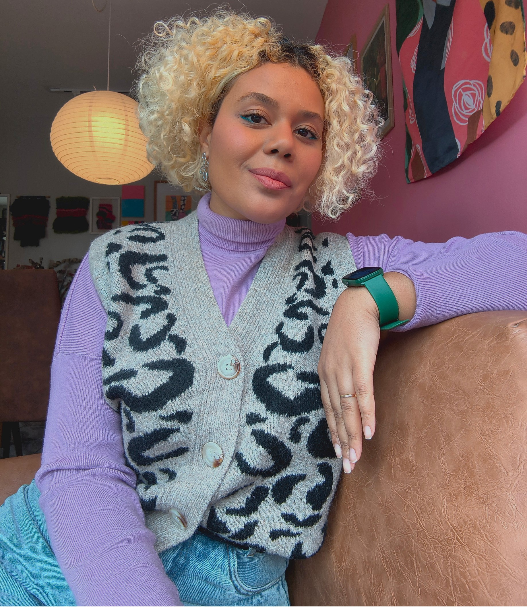
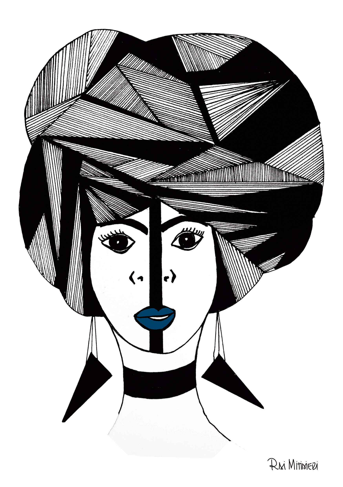

Arquiteta de interiores, arte-educadora e ilustradora. Crio arte manual em aquarela, guache, nanquim e lápis de cor, inspirada na natureza, na moda e no protagonismo das mulheres negras.
Ilustrações


